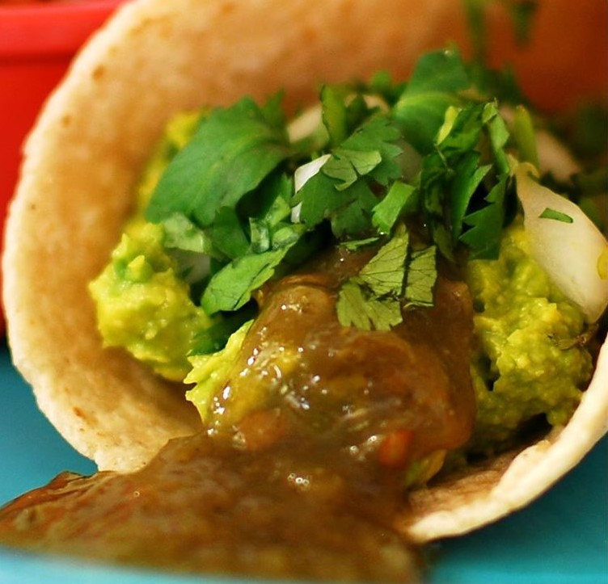

Taco Recipe

Image Source:
https://imagesvc.meredithcorp.io/v3/mm/image?url=https%3A%2F%2Fimages.
media-allrecipes.com%2Fuserphotos%2F1012733.jpg
Description
A traditional Mexican dish typically consisting of thin tortilla
topped with a type of filling.
Ingredients
- 3 avocados - peeled, pitted and mashed
- 1/4 cup onions, diced
- 1/4 teaspoons garlic salt
- 12 (6 inch) corn tortillas
- 1 bunch fresh cilantro leaves, finely chopped
- jalapeno pepper sauce, to taste
Steps
- Preheat oven to 325 degrees F
- In a medium bowl, mix avocados, onions, and garlic salt.
- Arrange corn tortillas in a single layer on a large
baking sheet, and place in the preheated oven 2 to 5 minutes,
until heated through.
- Spread tortillas with the avocado mixture. Garnish with
cilantro and sprinkle with jalapeno pepper sauce.
Recipe Source
https://www.allrecipes.com/recipe/41638/avocado-tacos/